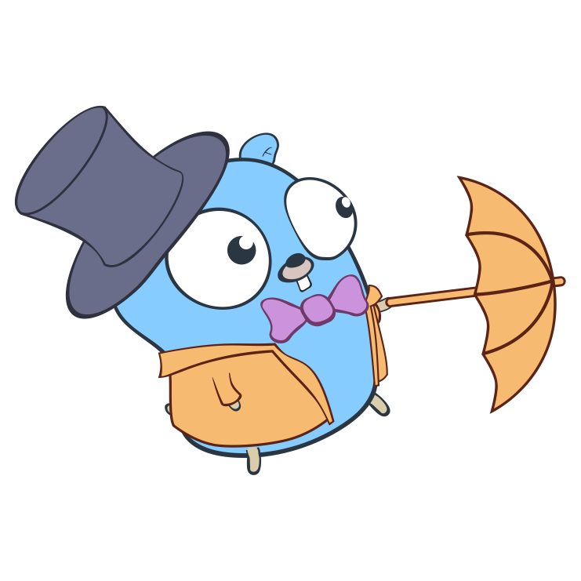

优化Go应用性能就是在浪费时间？
原文标题：Writing slower Go programs。作者认为应该优化可读性，而不是优化性能。你认可吗？一起看下该文。本文不代表 Go语言中文网 的观点。

什么？写更慢的 Go 程序？难道我们不应该关注如何让 Go 程序更快吗？
实际不是的。为了性能而优化 Go 代码几乎肯定在浪费你的时间，原因有以下几点：
- 性能并不重要（Performance doesn’t matter）；
- Go 本身就够快；
- 可读性胜过速度；
以上几个简短的陈述，有些人可能不服，所以需要做一些阐述。需要说明的是，并非全部如此，肯定存在例外情况，这里只说大部分时候。而且，这三点很难在工程师中达成共识。所以，你可以随意发表你的看法，甚至可以说这是有史以来最垃圾的文章，但还是继续读下去吧。
性能并不重要
对于我们大多数人编写的大多数程序来说，它们执行的速度到底有多快并不重要。例如，以下是我最近参与的一些项目：
- 网站链接检查器（抓取网站，以找到和报告中断的链接）
- Terraform 提供程序（通过 Terraform 代码管理站点监视检查）
- 数据分析器（下载和计算监测数据的统计表）
- 站点迁移工具（在服务器之间移动网站文件和数据库）
所有这些程序运行相对较少（可能一天一到两次），运行时间很短（一到两分钟）。这样的情况，值得花费任何工程上的努力让它们变得更快吗？几乎可以肯定不值得。（如果你已经被说服了，你可以停止阅读，但我觉得我可能需要再多说一点。）
即使在我们关心程序快速运行的极少数情况下，问题也不在于 Go 代码。例如，链接检查器 99% 的时间都花在等待 HTTP 请求上。Terraform 提供者将大部分时间用于对远程 API 进行通信和监听。站点迁移工具的瓶颈是通过网络复制数千兆字节的 tarballs。
因此，如果我们确实需要对这些程序进行性能优化，我们不会在 Go 级别进行这种优化。CPU 比内存访问快得离谱，内存访问比磁盘访问快得多，磁盘访问比网络访问快得多，网络访问比交互式用户快得多。因此，代码的执行速度可能是我们最不需要担心的事情。
当每个 ns/op 都很重要时
“等一下，伙计，我正在编写 3D 游戏，而且我的预算非常紧张。每十亿分之一秒都很重要，而你却说我不用担心性能？你是大笨蛋吧？”
没有。游戏是这个规则的一个合理的例外，因为游戏代码的某些小部分（例如着色器）是速度的关键。不过，请注意，即使在这里我们也引入了一个警告：性能只对游戏代码的一个小子集有影响。除非您从头开始编写 3D 引擎（不要这样做)），否则您自己的代码不太可能成为框架绘制的瓶颈。
你不是谷歌，也不是太空人
但是大多数 Go 程序不是游戏。还有其他例外吗？是的：网络服务器，如 web 服务器和 api 有性能关键部分。在一个大型、复杂的分布式系统中，总体请求延迟非常重要，因此每个子系统的延迟可以下降到纳秒。再说一次，你和我都不太可能编写这样的程序，当我们这样做的时候，我们最好知道我们在做什么。（polarisxu 译注：但 Web 和 API 开发可是 Go 目前主要的战场）
当然，还有很多特殊用途的嵌入式系统需要速度，比如 i/o 驱动程序，实时硬件，比如卫星和工业控制系统，我允许你对所有这些进行例外处理，但是我坚定地认为它们并不代表典型的 Go 程序员的 Go 程序。（polarisxu 译注：我无言以对）
Go 本身够快
即使性能不是大多数程序的主要考虑因素，但这并不意味着我们不应该考虑它。作为程序员，您所做的选择会影响程序的性能，包括内存和磁盘使用以及原始速度。有可能编写的程序执行得非常糟糕，以至于它们使用起来很慢，令人恼火，或者浪费资源，比如一次性将整个文件读入内存，而不是一行一行地处理它。
然而，一般来说 Go 程序是相当快速和高效的。如果你是从 Ruby、 PHP 或 Python 这样的解释性语言开始转向 Go 的，那么 Go 可以简单地快速运行。这主要是因为它是一门编译语言。任何解释器，无论多么聪明或多么经过优化，都无法与编译成纯机器代码的某些东西的性能相匹配。
轻装上阵
编译后的 Go 程序也很小。解释器又大又复杂，在开始执行程序之前，它们需要做大量的工作来解释程序。您需要将解释器与程序一起分发。
相比之下，Go 二进制文件只包含程序本身的机器代码，加上 Go 运行时，后者提供了 goroutine 和垃圾收集等功能。这使得 Go 程序在内存和磁盘使用方面更轻松，执行更快，并且易于构建、打包和分发。
首选需要优化的是选择合适的语言
因此，我们通常不需要太担心我们的代码在 Go 中的性能，因为我们从一个非常快的基线开始，感谢 Go 的编译本质。当然，有更快的编译语言，但这不是重点。如果性能对您的应用程序非常重要，那么不要浪费时间调整和优化您的 Go 代码: 只要使用不同的语言就可以了。我听说 C++ 很不错。
可读性胜过速度
是这样的。大多数程序花在阅读上的时间比执行上的时间要多得多。而且程序员花费的时间比 CPU 花费的时间要多得多（祝你好运找到一个每小时 5 美分的开发人员）。那么，为了可读性而不是为了原始速度而优化程序是否有意义呢？
当然，我们希望我们的程序可读性和速度快一样好，而这通常是可能的。但是，当我们的工程师告诉我们：“嘿，我可以通过使用数组而不是 map，并使用键的低阶位计算索引，使每通电话的速度提高几纳秒” 时，重要的是要考虑我们放弃了什么来换取这几纳秒。
一切的成本，一无所有的价值
每一次优化都是一次权衡。当我们权衡速度和内存时，我们失去的通常是：
- 简洁。有更多的代码，所以很难阅读
- 清晰。这是如何工作的不再明显
- 简单。更多的功能，更多的抽象，更多的数据结构读取和理解
教会自己可读性价值的一个很好的方法是尝试阅读别人的代码。作为开发人员，我们通常不会做很多这样的事情，我们可能要么自己编写代码，要么深度参与这些代码，所以我们很清楚这一切是为了什么，以及它们是如何组合在一起的。我们甚至可以感觉到随着时间的推移，由于需求和特性更新的变化，它是如何变化的。
黑暗中一座陌生的房子
当您第一次查看代码时，您不会有任何上下文。这就像在黑暗的房间里跌跌撞撞，被电线绊倒，脚趾被意想不到的家具绊到。“那是什么鬼东西?” 在 GitHub 上浏览任何大型的 Go 项目，你就会明白我的意思。（你从哪个文件开始读？一个重要的程序有开头吗?）
现在，如果一个程序不能做很多事情，就很容易让它变得简单。有些程序是复杂的，因为问题域是复杂的（Kubernetes）。我们写的任何东西都有一定的不可避免的复杂性。但这并不意味着要用聪明的、狡猾的、超优化的代码进一步模糊它。相反，它建议我们应该尽一切可能使我们的代码尽可能简单、直接和明显。
写更好的代码，更少的注释
对于一般的 Go 程序员来说，在任何级别都可以进入你的任何函数，并且或多或少地了解这些代码的用途和工作原理。我这么说并不是说你应该在上面写上大量的注释。只有当我们已经做了所有可能的事情来使代码变得简单和明显，并且在某种程度上写注释就是承认失败时，我们才应该使用注释。它在说: “我知道你不会理解我写的东西，所以我试图用另一种方式来解释它。”
我是第一个承认说起来容易做起来难的人。编写简单的代码很难。首先，为了向任何人解释一个概念，你需要自己理解它。要向计算机解释它，你需要彻底地了解它。事实往往并非如此。
你为什么讨厌乐趣？
另一方面，针对性能的调优代码既有趣又简单。我们都很享受。很多时候，我们就像醉汉在灯柱下面找钥匙，尽管他实际上把钥匙掉在了别的地方: 这里的光线比较好。我们看到一些东西可以很容易地优化和制造得更快，所以我们就这么做了。就像《侏罗纪公园》里的科学家们一样，我们总是全神贯注于我们是否能做到，我们不会停下来思考我们是否应该做到。
其次，我们之所以成为工程师，是因为我们喜欢聪明，喜欢做别人想不到的聪明、狡猾、巧妙的事情。在我们自己的私人项目和游戏时间里这样做是完全合法的。商业软件工程是完全不同的。“清晰比聪明更好（Clear is better than clever）”，Go 谚语如是说，这句话很好地概括了我的整个信息。
禅心，初心
作为一个 Go 导师和老师 ，我发现那些刚接触编程的人对这个想法没有任何困难。所有的代码一开始对他们来说都是莫名其妙的，所以他们完全同意这个想法，认为这对其他人来说可能也是困难的。他们不会被自己的聪明才智或者作为一个热门程序员的身份所束缚，所以他们乐于编写简单、优雅、直截了当的代码来实现自己的目标。
相比之下，对其他语言有丰富经验的人有时会很难掌握 Go 的简单性。如果它们来自像 Ruby 这样的解释性语言，它们倾向于以复杂的、不明显的、高度个性化的方式表达自己，而这些语言是允许的。如果他们来自 C++ 和 Java 的世界，他们编写的代码在一般的 Gopher 看来是荒谬的过度工程化。那边就是这么办事的。在许多情况下，当他们知道这不是 Go 的方式时，他们实际上松了一口气。
结论：放慢你的脚步，兄弟
“慢行”运动，如果我可以把这句话换成一个词的话，就是做得更少，更简单，做得更慢。
当然，我并不主张让程序不必要地慢下来。我想说的是，首先，你不需要像你想的那样担心性能问题。当你这样做的时候，通常有比编写晦涩难懂的代码更容易的方法来改进它。
其次，您应该比现在更多地关注简单性和可读性。当你考虑优化的时候，这就是你应该优化的。花一个小时来提高可读性。
第三，愿意在可读性上投资。如果你可以重构你的程序，让它显著地更清晰，代价是让它稍微慢一点，那么就去做吧。当性能很重要的时候，记住它不是免费的。如果您考虑为代码增加额外的复杂性以追求纯粹的速度（这里是一个特例，那里是一个聪明的位旋转技巧），那么请再考虑一下。你总是可以买到一台更快的电脑，但是你很难买到一个更快的大脑。
原文链接：https://bitfieldconsulting.com/golang/slower
作者：John Arundel
编译：polarisxu